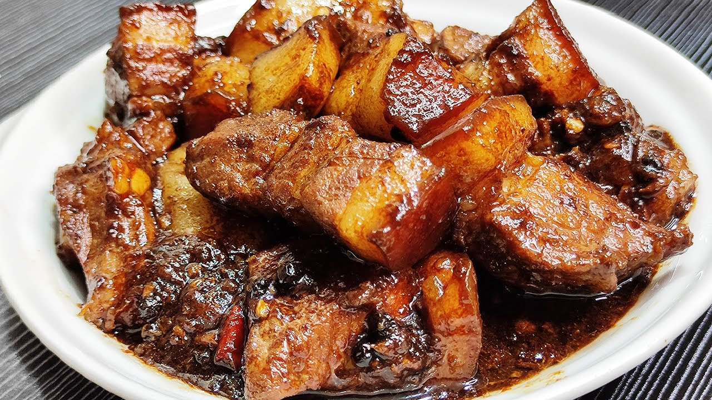
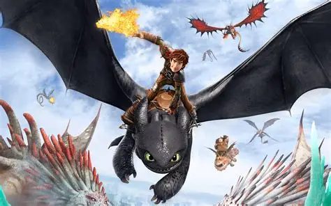
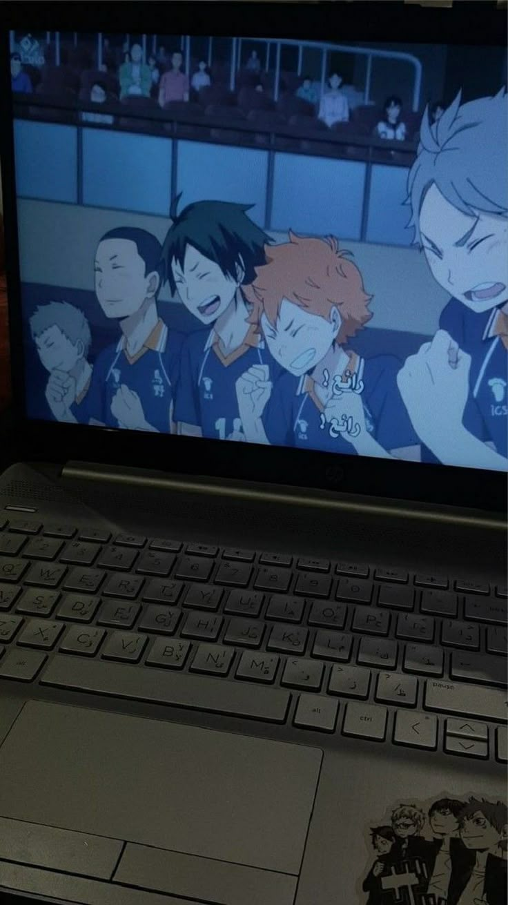

Adobo is my absolute favorite Filipino dish! It’s tender meat (usually chicken or pork) simmered slowly in a savory mix of soy sauce, vinegar, garlic, and peppercorns. It’s rich, salty, tangy, and full of flavor — perfect when served over warm, fluffy rice. It tastes like home!

How to Train Your Dragon is an amazing adventure about a young Viking named Hiccup who befriends Toothless, a rare Night Fury dragon. Instead of fighting dragons, he learns to understand and trust them. It’s a heartwarming story about friendship, courage, and seeing beyond differences — one of my all-time favorites!

Watching Anime is my favorite way to relax and explore amazing stories! From action and adventure to heartwarming moments, every show brings unique characters and beautiful worlds. It inspires me, makes me smile, and always gives me something exciting to look forward to!
@2026- Godin,Dan Estella